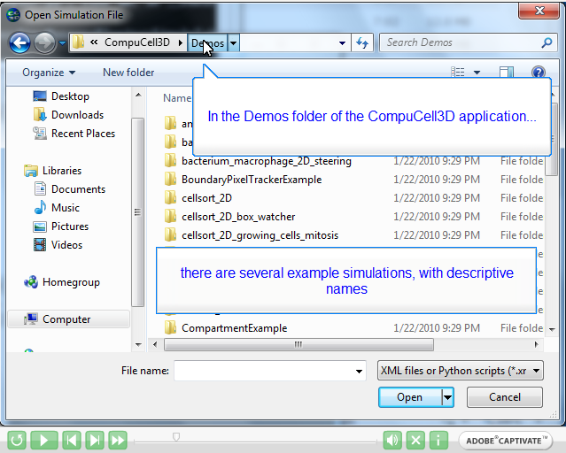

Something that has stayed on my mind for several months is the feedback that we received from the summer cc3D workshop. The most requested comment was for improved documentation. Over the past several weeks, this had me wondering about training videos. A little research and experimentation led to this very simple prototype:
http://mypage.iu.edu/~heiland/csort1_demo/
With a little additional effort, I believe this is something that we could insert into a status report for the cc3D grant (addressing users' needs).
